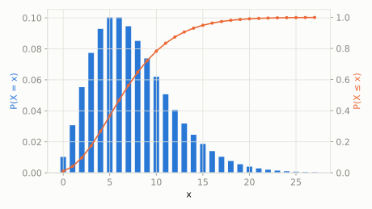

A kid is fishing at a pond and wants to catch exactly 5 fish before going home. Each cast has a 40% chance of catching one.
By the time they land their 5th fish, what's the chance they had exactly 3 empty casts along the way?
scipy.stats.nbinom
Geometric generalized: instead of stopping at the 1st success, keep going until the n-th success, and count the *failures* along the way. Geometric is the special case n=1. It's popular in real data because it handles more spread-out ('overdispersed') counts than Poisson.
| parameter | default used here | meaning |
|---|---|---|
n | 5 | number of successes we're waiting for |
p | 0.4 | probability of success on each attempt |
A kid is fishing at a pond and wants to catch exactly 5 fish before going home. Each cast has a 40% chance of catching one.
By the time they land their 5th fish, what's the chance they had exactly 3 empty casts along the way?
scipy.statsimport scipy.stats as stats
import numpy as np
dist = stats.nbinom(n=5, p=0.4)
print('P(exactly 3 empty casts before 5th fish):', round(dist.pmf(3), 4))
print('expected empty casts:', round(dist.mean(), 4))